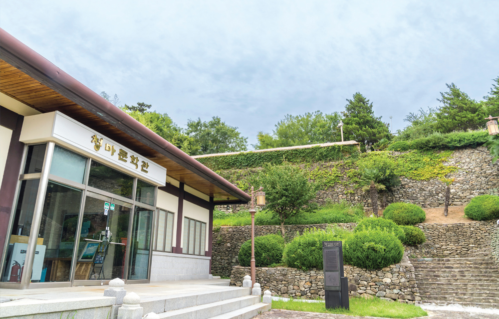
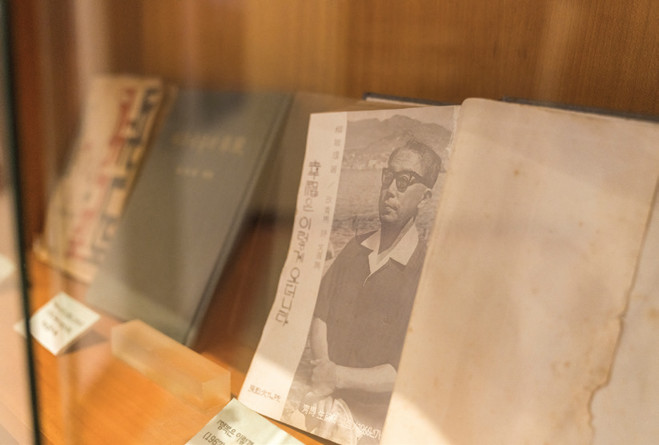
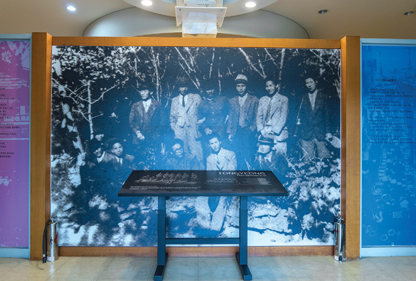
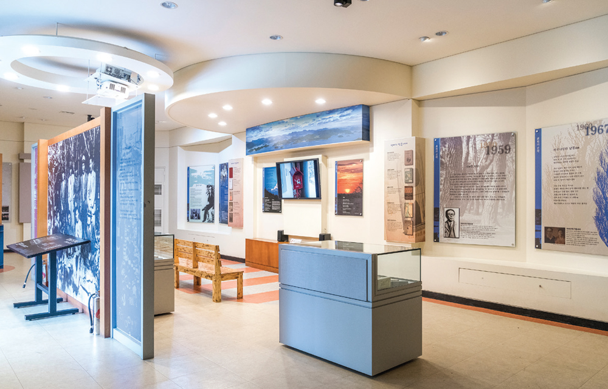
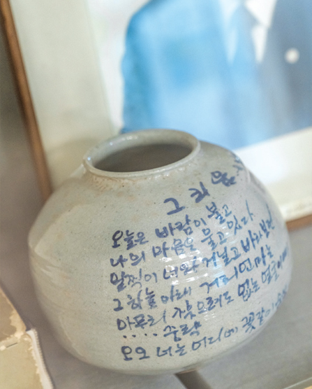
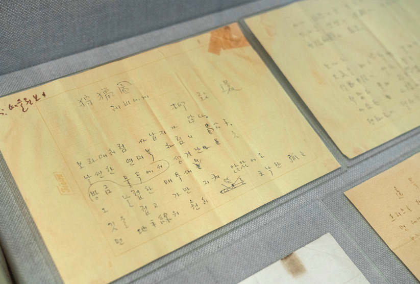
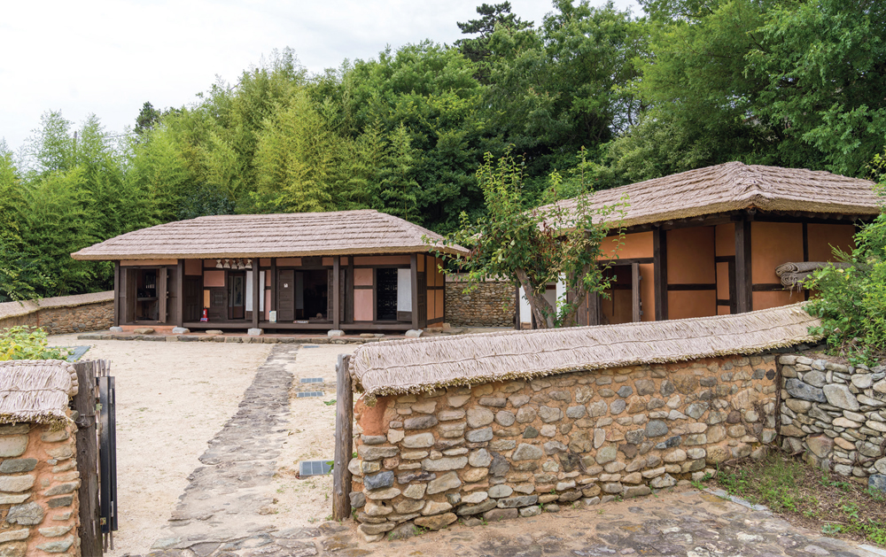
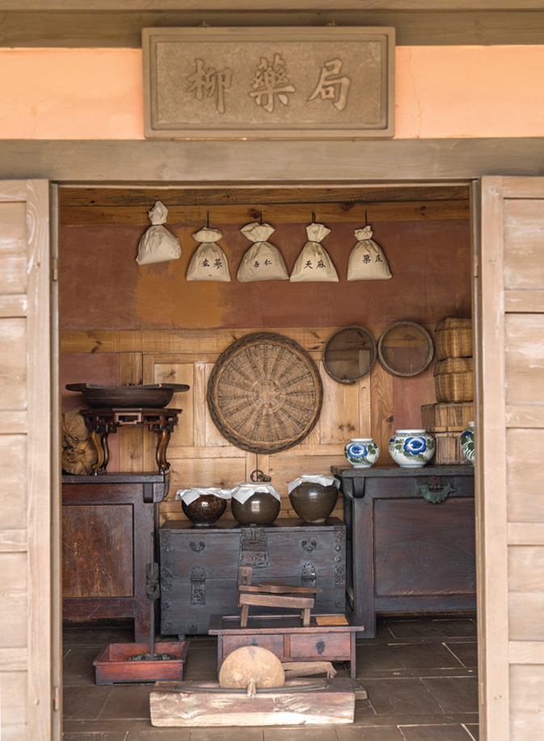

다른그림찾기
EVENT
두 눈 크게 뜨고
두 사진 속 다른 부분을 찾아주세요!

여름이 파랗게 익어 가면 마음은 어느덧 길을 찾아 나선다. 푸른 바다와 낭만적인 항구, 알록달록한 벽화가 있어 여행하기에 더 없이 좋은 통영. 시선을 돌리는 곳마다 작품이 되어 마음을 일렁이게 한다. 이곳에서 자란 청마 유치환의 마음도 이러했을까. 통영의 어느 곳 하나 청마 시의 산실이 아닌 데가 없다.


청마 유치환은 근대 시 문학에서 빼놓을 수 없는 인물이다. 얼마나 대단한 시인이었는지에 대한 설명은 차치하더라도 ‘이것은 소리 없는 아우성’으로 시작하는 <깃발>을 모르는 사람이 있을까. 청마문학관에 도착하니 신기하게도 학창시절 교과서에 실렸던 시 구절이 조금씩 떠올랐다.
청마문학관은 경상남도 통영시 정량동 망일봉 기슭, 바다가 보이는 언덕에 있다. 건물이 단층으로 되어 다른 문학관에 비해 규모는 작은 편. 그래서인지 아늑하고 편안한 느낌이다. 반면 초록의 정원에서 보이는 세상은 압도적이다. 에메랄드빛 하늘과 그 아래 펼쳐진 푸른 바다, 정박한 배들로 가득한 통영항의 풍경이 어우러져 장관을 이룬다.
‘유치환도 이곳에 서서 시상을 떠올렸겠지’라고 생각하며 건물 안으로 들어섰는데, 안내하는 직원이 “이곳은 실제로 청마가 태어난 곳은 아니며, 태평동 522번지에 생가를 복원해 관광명소로 만들려고 했으나 도시계획상 부득이 이곳에 문학관을 짓게 되었다”라고 설명해주었다.

2000년 2월 개관한 문학관은 크게 3개의 주제로 나뉜다. 청마의 생애를 연도별로 정리해놓은 ‘청마의 생애’, 작품의 변천과 평가를 살펴볼 수 있는 ‘청마의 문학’, 100여 점의 유품들과 관련 평론·서적·논문을 정리한 ‘청마의 발자취’다. 가장 눈길을 끈 건 손때 묻은 책들과 육필 원고다. 유치환의 땀과 고뇌 그리고 그날의 감정이 빛바랜 원고에, 꾹꾹 눌러 쓴 잉크에 묻어 있는 듯했다.
문학관을 관람하면서 새롭게 알게 된 사실도 있는데, 바로 이름만 들어도 알 수 있는 대단한 예술가들이 유치환과 함께 통영에서 활동했다는 것. 소설 <토지> 작가 박경리, <꽃>의 김춘수, 한국의 피카소로 불리는 미술가 전혁림, 세계적인 작곡가 윤이상 등 수많은 문화예술인과 함께 찍은 사진이 문학관 입구에서 가장 먼저 방문객을 맞이하고 있다.

유치환은 정지용의 시에 크게 영향을 받아 스스로 시를 쓰기 시작한 것으로 알려져 있다. 1931년 <문예월간>지에 시 <정적>을 발표하면서 등단하였고, 이후 여러 직업을 전전하다가 1937년 통영에서 교사가 되었다. 시대적인 상황으로 인해 형 유치진의 농장이 있던 만주로 이주했다가 광복 직전에 귀국하여 통영에서 다시 교사로 일했다.
삶의 본연에 내재한 욕망과 도덕적 갈등을 시적으로 극복하고자 한 대표적인 생명파 시인이었던 유치환은 1939년 첫 번째 시집 <청마시초>를 냈는데, 그의 가장 유명한 작품인 <깃발>이 수록되어 있다. ‘깃발’은 이상향에 대한 끝없는 동경을 상징하는데, 깃대에 묶여서 날아 갈 수 없는 깃발을 통해 그곳에 결코 도달할 수 없는 좌절과 한계로 인한 슬픔을 시에 표현한 것이다.
유치환을 이야기할 때 빼놓을 수 없는 이야기가 있다. 시조 시인 이영도와의 사랑. 1937년 통영에서 교사로 일하던 무렵, 문학회 모임에서 만나 사랑에 빠지지만 유부남이었던 유치환과 미망인이었던 이영도의 사랑은 이루어질 수 없었다. 그는 통영우체국 창가에서 이영도에 대한 사랑을 연서로 표현했는데, 생을 마감할 때까지 20년 동안 주고받은 편지가 무려 5,000여 통에 이른다고 한다. 이 시기에 그의 작품을 보면 행간마다 절절한 사랑 이야기를 담고 있다.


청마문학관에서 돌계단을 따라 올라가면 유치환이 살았던 생가가 복원되어 있다. 소박한 초가집과 돌담, 담장을 타고 오르는 담쟁이 넝쿨이 그 옛날 시골집처럼 정겹다. 공간은 방 2칸과 부엌이 있는 안채, 창고를 겸한 아래채가 전부. 공간이 크지는 않았지만 유품과 세간살이를 구경하며 이곳에서 뛰어놀았을 어린 유치환의 모습을 상상할 수 있었다. 안채에는 한자로 ‘유약국’이라고 적힌 현판이 있고, 처마 밑에 매달아 놓은 약재봉지나 약 무게를 재는 저울 등이 있는 것으로 보아 유치환의 아버지가 약재상이었다는 사실도 알 수 있었다.
생가를 뒤로 하고 다시 강구안의 풍경을 바라본다. 조금씩 내리던 비가 그치고 어느새 맑게 갠 하늘. 통영의 하늘이, 바다가 에메랄드빛으로 반짝거린다. 유치환의 시 <행복>의 구절처럼.

주소 경남 통영시 망일1길 82
운영 09:00 ~ 18:00
휴관 월요일, 공휴일의 다음날, 1월 1일, 설날/추석